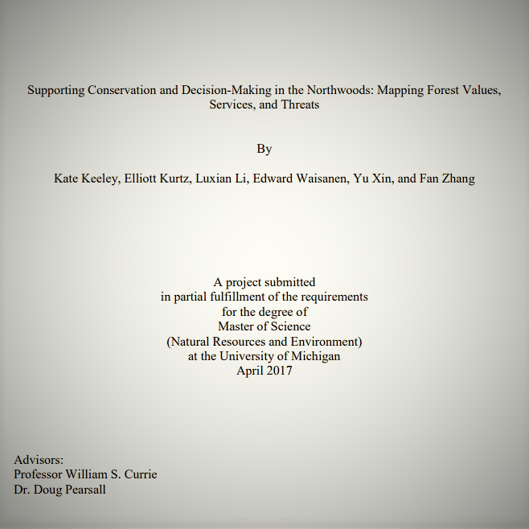
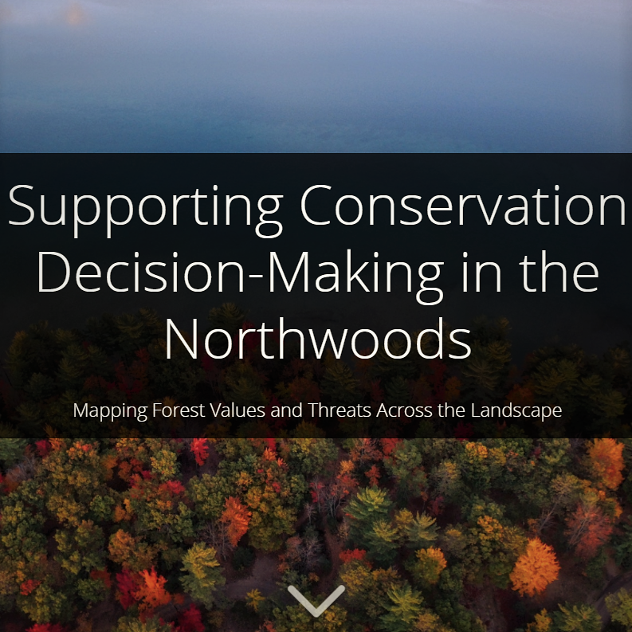
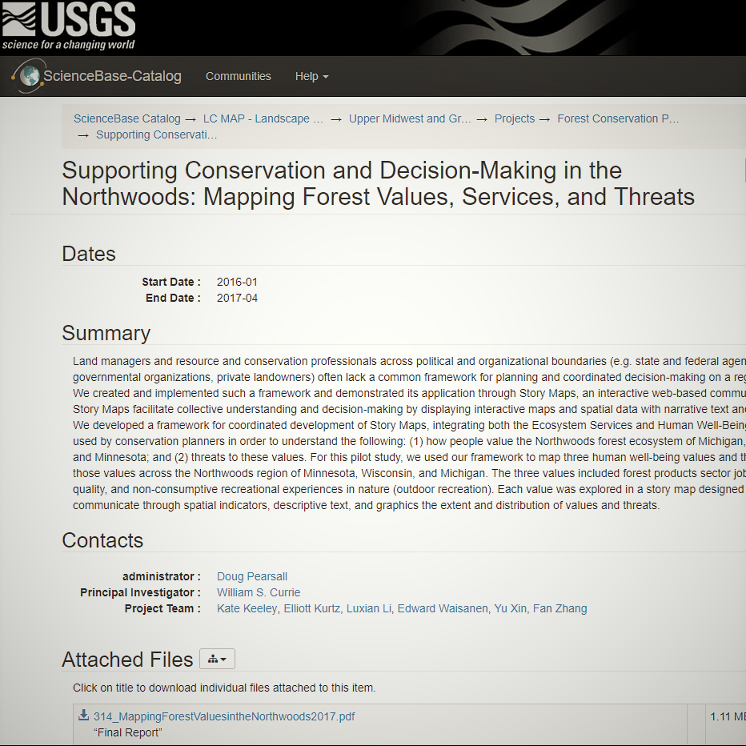
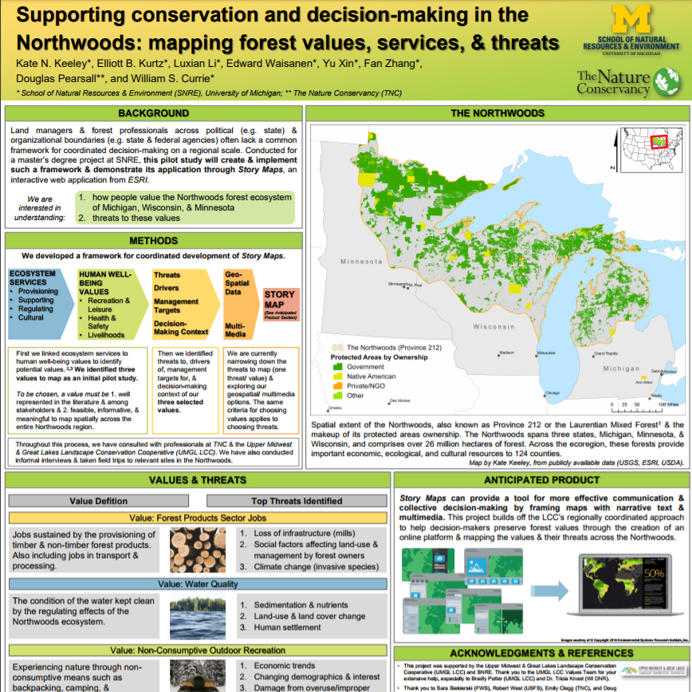
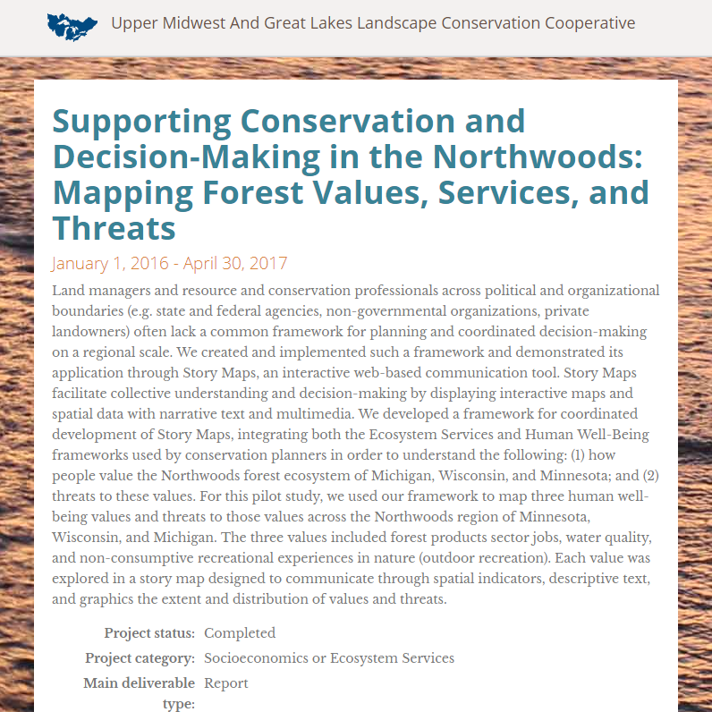
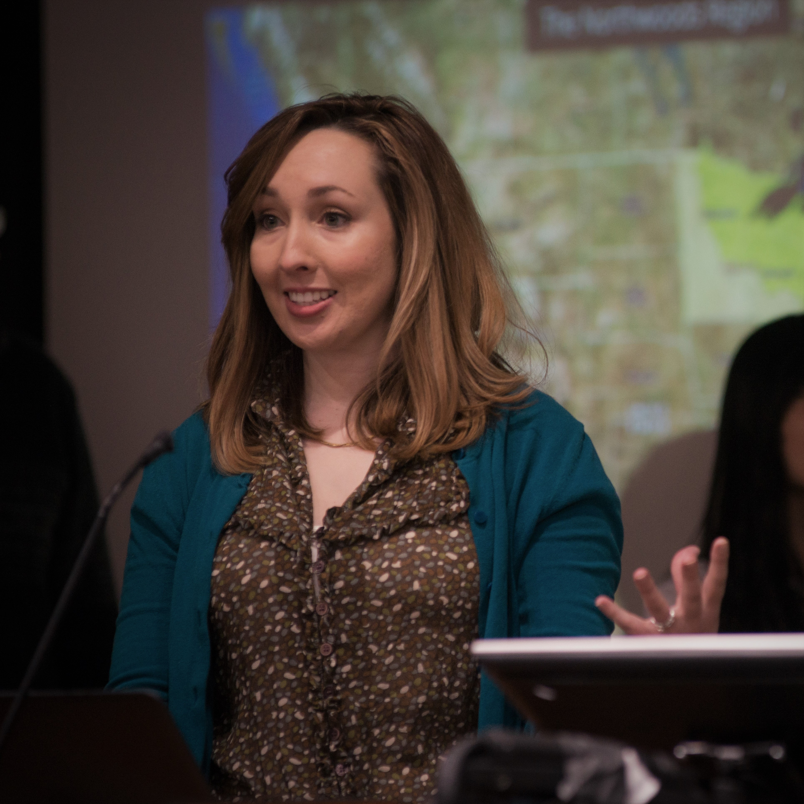
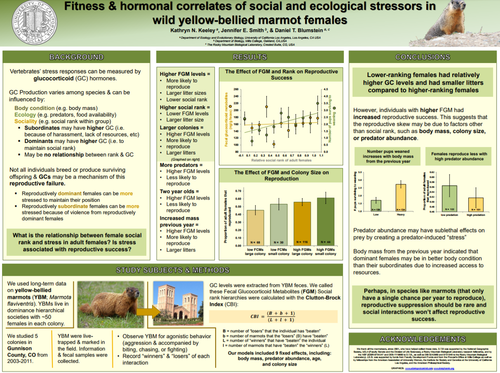
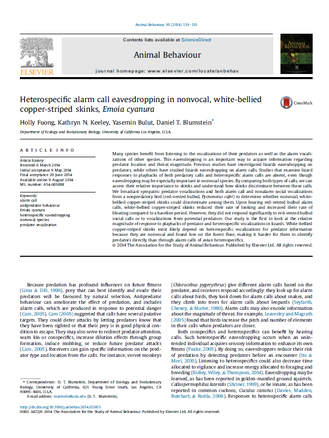
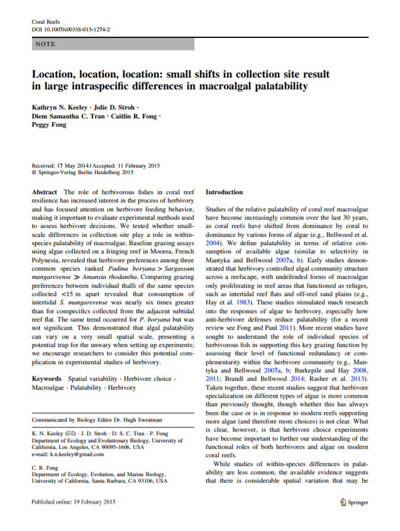
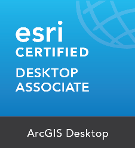

Education
-
University of Michigan
2015 – 2017Master of Science, Natural Resources and Environment
Specialized in:
Behavior, Education, and Communication and Environmental Policy and Planning
Master's Project: Supporting Conservation and Decision-Making in the Northwoods: Mapping Forest Values, Services, and Threats -
University of California, Los Angeles
2011 – 2015Bachelor of Science, Ecology, Behavior, and Evolution | Departmental Honors
Minor: Geospatial Information Systems & TechnologiesLayout Designer | The Daily Bruin
October 2011 - March 2013
Designed and developed the layout of UCLA’s award-winning student newspaper
Professional Experience
- February 2017 - Present
GIS Specialist | Giffels Webster
Strengthening the Geographic Information Systems (GIS) program through weekly blog posts, redesigning website content, and promoting GIS to clients through the development and presentation of marketing materials using ESRI Story Maps, Microsoft Products, and Adobe Products
Creating high quality print and interactive web maps and apps, as well as performing GIS data maintenance, manipulation, and analysis
Developing GIS citizen engagement options by researching, organizing, and creating interactive web applications to encourage public participation
- July 2016 – May 2017
Graduate Student Mentor | University of Michigan
Supervisor of Program in the Environment Graduate Student Instructors (GSI). Served as day-to-day manager and administrator for all new GSIs
Restructured and strengthened the Graduate Student Mentor Program by 1. implementing the program’s first centralized online learning portal; 2. introducing five pedagogical workshops for new GSIs; 3. creating evaluation materials including process/implementation evaluation and observation forms; 4. Writing an Orientation Guide for future mentors
Responsible for evaluating all new GSIs and their classes. Provided feedback on their strengths, opportunities for improvement, and recommendations for training, disciplinary action, or recognitions
- January 2016 – May 2017
Graduate Student Instructor | University of Michigan
Instructor for three courses: ENV 463: GIS for Conservation and Management (Winter 2016 and 2017) and ENV 309: GIS Explorations (Fall 2016)
Responsible for the research, design, and development of some class curriculum, materials, and tests
Presented lectures, graded assignments, hosted office hours, and demonstrated excellence in teaching by receiving student nominated ”Outstanding Graduate Student Instructor Award”
Presented lectures and assignments that range from basic cartography and geoprocessing skills for raster and vector data, to more advanced subjects including suitability analyses, least cost path analyses, Python automation, georeferencing, digitizing
- May 2016 – December 2016
Urban Wildlife Intern | National Wildlife Federation
Non-profit experience at a new branch of the largest nonprofit conservation education organization in the country. Developed the California chapter’s education and outreach program through multiple projects:
Responsible for public outreach by representing the organization at several major nature and citizen science events, writing blog posts, maintaining social media campaigns, and creating educational materials
Supported the Urban Wildlife Co-Existence Initiative with the creation of a clearinghouse of resources about living with wildlife, used to support public engagement and evaluate initiative directions
Established effective and working relationships with the LA City Department of Animal Services and city planning groups to support future cooperation and involvement on urban wildlife projects
Served as a GIS liaison among stakeholders and developed interactive maps and high-quality maps for staff and public view, including maps used in promotional material, websites, and news coverage
- September 2015 – January 2016
Environmental Education Assistant | University of Michigan
Assisted with the development, implementation, and evaluation of a life science curriculum unit on climate change in local middle schools
Web-manager of My Environmental Education Evaluation Resource Assistant (MEERA), a website dedicated to supporting educators with one of the largest collections of environmental program evaluation resources
- July 2014 – July 2015
Education Specialist | Los Angeles Zoo & Botanical Gardens
Presented zoo educational programs, including on-grounds interpretation and interacting with zoo guests on a daily basis while providing information about habitats, wildlife, plants, and conservation
Assisted with zoo program, workshop, and educational resource development, including creating the guided tour used for the zoo’s new state-of-the-art Rainforest of the Americas exhibit
Led talks and tours for a variety of audience backgrounds, sizes (e.g. one-on-one interpretation to talks to over 150 people), and ages (e.g. young kids to adults)
- May 2016 – December 2016
Research Assistant | CRESST National Center for Research on Evaluation, Standards, and Student Testing
Worked directly with researchers at CRESST to research, develop, and evaluate a systems modeling intelligent tutoring tool, "Dragoon", for high school science curriculum
- June 2012 – September 2013
Seasonal Interpretive Park Ranger | National Park Service
Researched, developed, and introduced four original formal science and natural history interpretive talks and guided walks and presented them daily to diverse groups of different backgrounds, sizes (e.g. one-on-one interpretation to talks to over 150 people), and ages (e.g. young kids to adults)
Provided informal interpretation and orientation to park guests in visitor centers and on trails, requiring knowledge of a variety of topics and appropriate interpretive techniques to reach our diverse park audiences
Responsible for staffing visitor center facilities and stores, opening and closing facilities based on established SOPs, keeping facilities neat and stocked, and basic law enforcement duties
Master's Project
-
Supporting Conservation and Decision-Making in the Northwoods: Mapping Forest Values, Services, and Threats
January 2016 - April 2017Principal Investigator: William S. Currie, University of Michigan | Client: Doug Pearsall, The Nature Conservancy
Developed a collaborative decision-making tool with ESRI Story Maps to promote conservation efforts in MN, WI, and MI forests for our clients, The Nature Conservancy and the Upper Midwest and Great Lakes Landscape Conservation Cooperative.
-
UCLA Institute of the Environment & Sustainability
October 2014 - June 2015Principal Investigator: Dr. Eric Abelson
GIS and remote sensing analyses of puma highway crossings using ArcGIS and ENVI Classic: calculated regional NDVIs from satellite images, transformed GPS points to lines with Tracking Analyst, identified areas where pumas crossed roads using geoprocessing tools, isolated the elevation and vegetation characteristics of those particular crossing sites. -
UCLA Department of Ecology & Evolutionary Biology
June 2014 – June 2015Principal Investigator: Dr. Blaire Van Valkenburgh
Innovative research project to spatially analyze Pleistocene carnivore hunting injuries using ArcGIS: Using a skeleton image as a raster basemap, a skeleton polygon feature class was digitized and georeferenced. Then based on real bone injuries found, an injury point feature class was digitized. Heat-maps of injuries were created and the number of injury points on each bone polygon was analyzed. -
Department of Ecology & Evolutionary Biology
September 2012 - June 2015Principal Investigator: Dr. Daniel T. Blumstein
 -
UCLA Department of Ecology & Evolutionary Biology
January 2014 – March 2014Principal Investigators: Drs. Daniel T. Blumstein & Peggy Fong
Field & marine ecology research quarter in Moorea, French Polynesia

GIS Applications
Animal Behavior
Field Ecology
Certificates
ArcGIS Desktop Associate 10.3 | Esri | 04/2017
Basics of Python (for ArcGIS 10) | Esri | 02/2017
Python Scripting for Geoprocessing | Esri | 02/2017
Python Scripting for Map Automation | Esri | 02/2017
Do-It-Yourself Geo Apps | Esri | 08/2016
Going Places with Spatial Analysis | Esri | 06/2016
Interpretive Talk 2.0 | Eppley Institute | 08/2013
Foundations of Interpretation | Eppley Institute | 06/2013
Honors & Awards
- April 2017
The Donald M. Matthews Award, Excellence in Forestry Award
School of Natural Resources and Environment, University of MichiganEstablished in 1948 from a fund set up by alumni and faculty of the school, this award honors the memory of Professor Donald M. Matthews, who taught in the field of forest stewardship. The award is given to the most promising student in this field.
- April 2016
Outstanding Graduate Student Instructor Award
Program in the Environment, University of MichiganThis award recognizes an ENVIRON-course Graduate Student Instructor (GSI) who demonstrates outstanding commitment to teaching undergraduates and providing them with exceptional learning experiences.
- February 2016
Edna Bailey Sussman Environmental Fellowship
Edna Bailey Sussman FundFunding for an internship with the California National Wildlife Federation during the summer of 2016.
- May 2015
Dean's Prize Honoring Outstanding Undergraduate Researchers
University of California, Los AngelesGiven to select students that exemplify excellence in the sciences at UCLA's Science Poster Day.
- March 2014
Library Prize for Undergraduate Research, Best Minor Project in the Sciences
University of California, Los AngelesRecognition of excellence in undergraduate research at UCLA
- January 2014
Holmes O. Miller Scholarship for Field Study
UHolmes O. Miller Endowment FundFunding to support field biology research during the UCLA Field & Marine Biology Quarter (FMBQ)